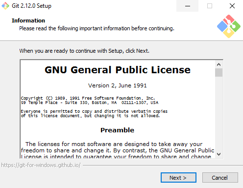
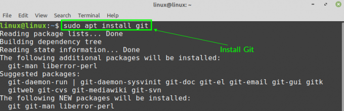

INSTALR O GIT NO WINDOWS
Instalar o GIT no Windows é tão simples como baixar um instalador e executá-lo. Execute os seguintes passos para instalar o GIT no Windows:
1 - Acesse o site oficial e faça o download do instalador do GIT para Windows.
2 - Depois de baixado, clique duas vezes no arquivo para iniciar o assistente de instalação. Basta seguir as instruções na tela, clicando em Next. Ao término, clique em Finish para concluir com êxito a instalação.

3 - Abra o prompt de comando e digite os seguintes comandos no terminal:
git config --global user.name "Seu nome"
git config --global user.email "exemplo@seuemail.com.br"
git config --global user.email "exemplo@seuemail.com.br"
Instalar o GIT no Linux:
Se você é um usuário Linux, então deve estar acostumado com instalar programas e pacotes em seu computador usando comandos de instalação apt-get ou yum. Instalar o GIT não é diferente:
Para usuários Debian/Ubuntu (apt-get):
1 - Abra o terminal e execute os seguintes comandos:
sudo apt-get update
sudo apt-get install git
 2 - Verifique se a instalação ocorreu com sucesso usando git --version. 3 - Execute os seguintes comandos no terminal para configurar seu e-mail e nome de usuário que serão associados à sua conta GIT:
git config --global user.name "Seu nome"
git config --global user.email "exemplo@seuemail.com.br"